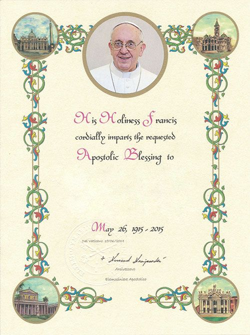

Papal Blessings
Would you like to receive a blessing from the Holy Father when celebrating a special occasion?
A Papal Blessing or "Benediction Papalis" is a very meaningful way to commemorate a very special occasion in yours or your loved one's life.
While the blessing itself is invisible to the eye, it can be memorialized in a unique hand painted parchment certificate inscribed with the name(s) of the recipients, featuring t he papal seal and the current Pope's photo. What a beautiful keepsake for yourself or a loved one!
Parishioners may order a Papal Blessing scroll to commemorate a milestone wedding anniversary or birthday, as well as the reception of the sacrament of baptism, first comm union, confirmation, marriage, and religious ordination and profession.
A Papal Blessing can only be issued to a practicing baptized Catholic and a member of a Pastor's own parish.
As of 2015, all orders are processed directly through the Office of Papal Charities at the Vatican. To obtain a Papal Blessing, a request form must be filled out and faxed or mailed to the Parchment Office in Vatican City.
Request forms and additional information can be found on the Office of Papal Charities website .
The Papal Blessing is free but there are associated costs in receiving the unframed certificate in your choice of English, French, Italian, German, Portuguese or Spanish. An invoice will be sent to you when you receive the parchment from the Vatican.
*Please note under the rules of the Vatican, a Papal Blessing cannot be issued to an institution, organization, group or association etc. or for non-practicing Catholics.
Please allow approximately two months for processing and delivery except in August and December where processing times are longer due to the closure of the Vatican.
Source: public St. Monica's Parish page, captured for demo planning from https://stmonicasto.archtoronto.org/en/our-faith/sacraments--sacramentals/papal-blessings/.